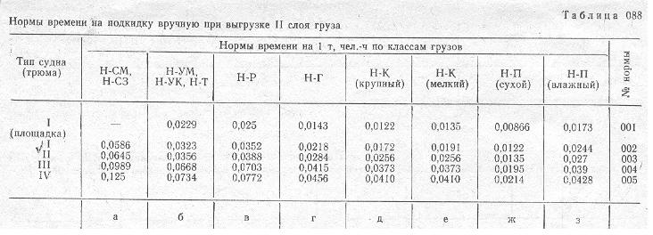

Примечание: ПРи наличии в грузовых трюмах судов (проектов 11, 21-88, 576) трубопроводов осушительной системы, затрудняющий подкидку груза, к нормам времени, приведенным в табл. 088, следует применять коэфициент 1,15.